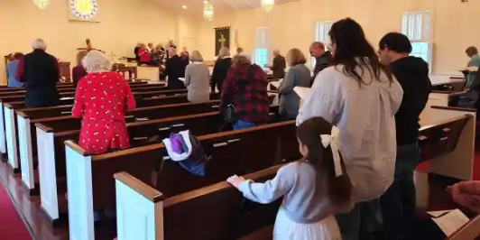
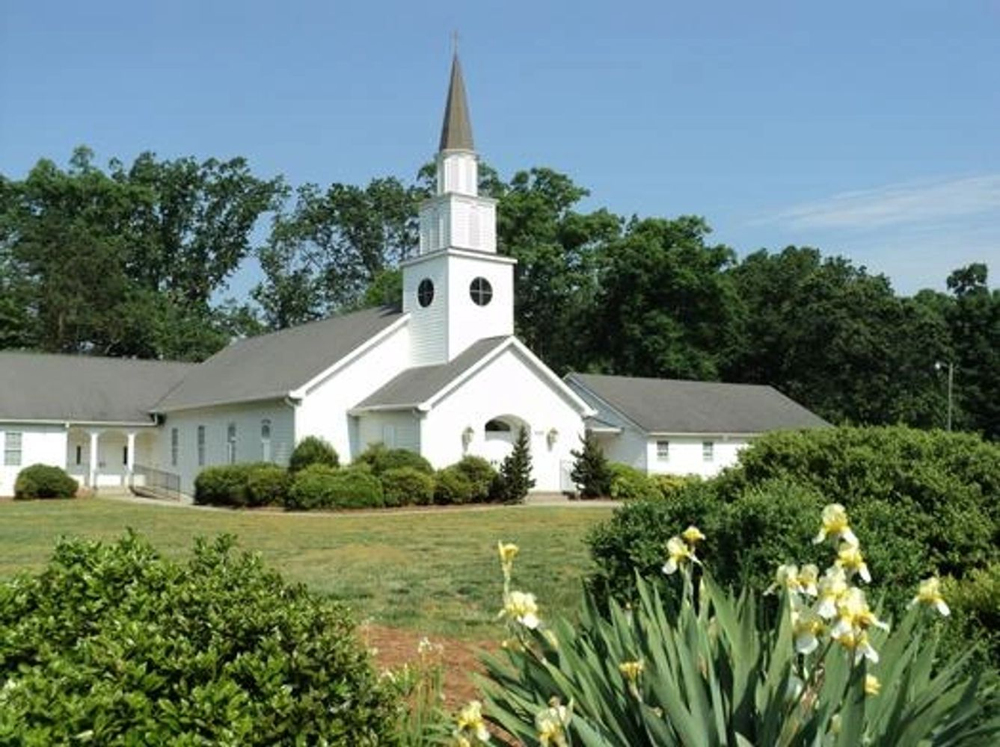
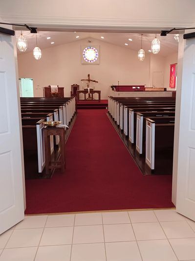
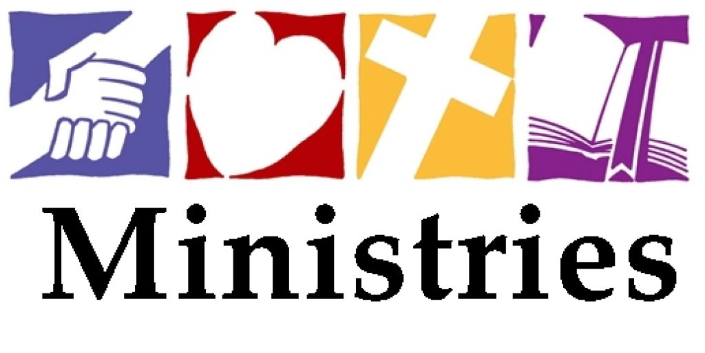
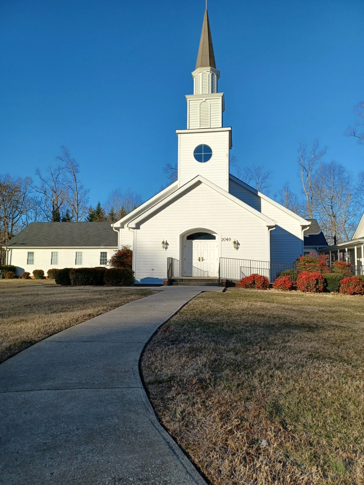
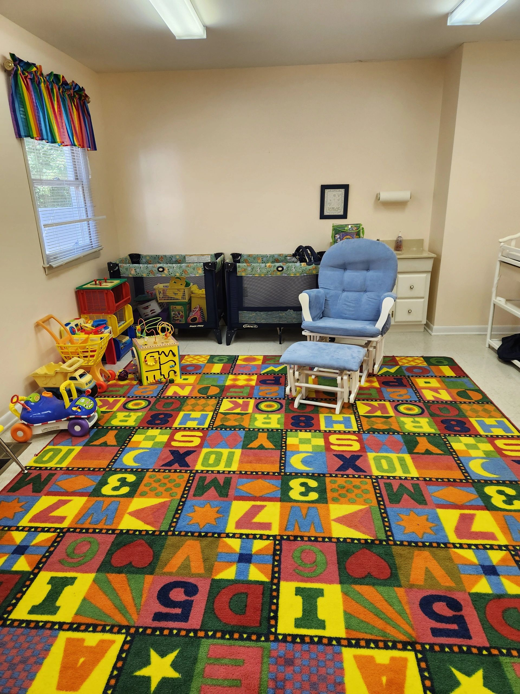
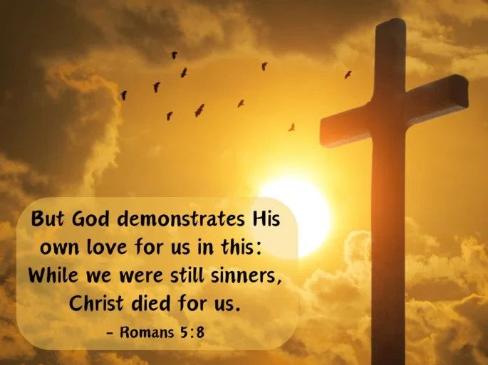

Our Community
At Pleasant Ridge Christian Church, our mission is rooted in love, faith, and community. We strive to embody these values in every service and outreach initiative. Join us as we grow together in Christ-centered living.



9 am
During Service
10–10:30 am
10:30–11:30 am
10:30–11:30 am
Yard Sale/Bake Sale to benefit 7Homes Foster Care and Adoption Agency
Sale will be on front lawn and inside Fellowship Hall. Will include the following:
Link to 7Home website:
https://www.7homes.org/
At Pleasant Ridge Christian Church, we are committed to loving God, loving people, and helping others connect with God through Bible-based worship and teaching. We seek to make disciples who share God’s love in their communities and around the world. Everyone is welcome here, and we work to create a safe, inviting space for all.

We offer a range of ministries and programs for all ages, including adult Bible Studies, Children's Church and Sunday School as well as a variety of outreach opportunities. These ministries are designed to help members grow in their faith and serve others in our community.
At Pleasant Ridge Christian Church, we believe faith should extend beyond our church walls and into the world. We take part in a range of local and global outreach efforts, from feeding those in need to supporting missionaries around the world.

At Pleasant Ridge Christian Church, our mission is rooted in love, faith, and community. We strive to embody these values in every service and outreach initiative. Join us as we grow together in Christ-centered living.

Our Sunday morning traditional service consists of:
All our services are designed to help our members and guests connect with God and grow in their faith.
Explore what we offer

Pleasant Ridge Christian Church has child care for the little ones available during the service hour from 9–10 am. It is staffed by a dedicated group of Christian adults with a passion for caring for children. For the safety of the children and to meet their needs, there are always 2 staff members in attendance with the kids in nursery.
“But God demonstrates his own love for us in this: While we were still sinners, Christ died for us.”Romans 5:8
